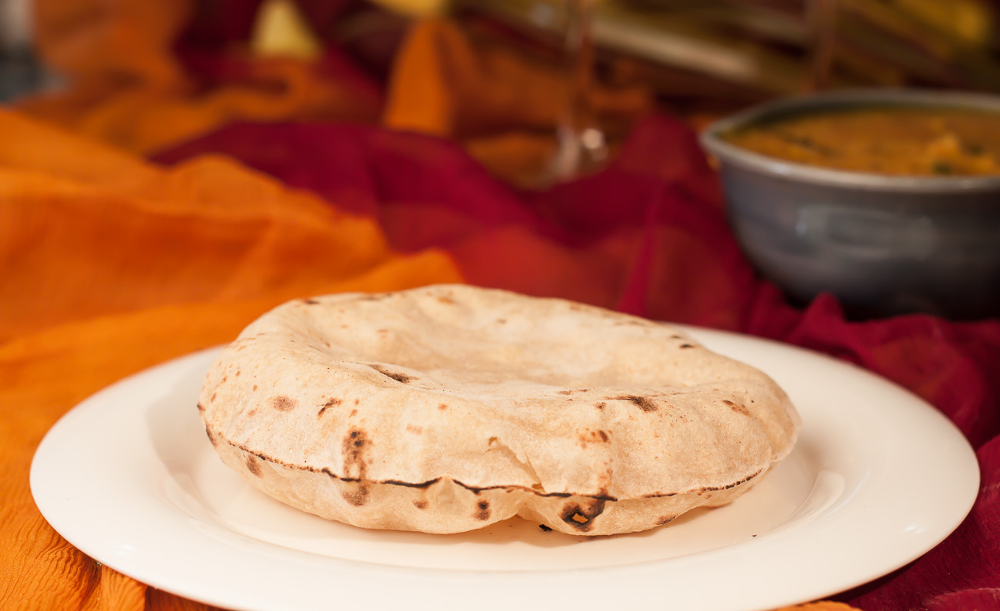

Flatbread

Description
Roti (Indian Flatbread)
Roti is a traditional Indian unleavened flatbread made from whole wheat flour. It’s soft, light, and perfect for scooping up curries.
Ingredients
- 1 cup whole wheat flour
- 1/4 cup water (approx.)
- Pinch of salt (optional)
Steps
- Mix flour and salt (if using). Gradually add water to form a soft dough.
- Knead until smooth and elastic.
- Divide into small balls.
- Roll each into a thin circle.
- Cook on a hot griddle (tava) until bubbles appear. Flip and cook the other side, pressing gently with a cloth or spatula until light brown spots appear.
- Serve Warm!
Home